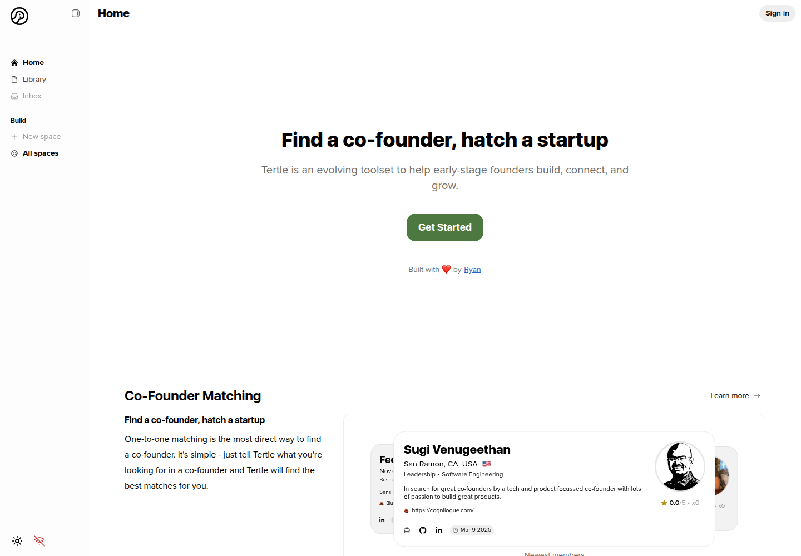
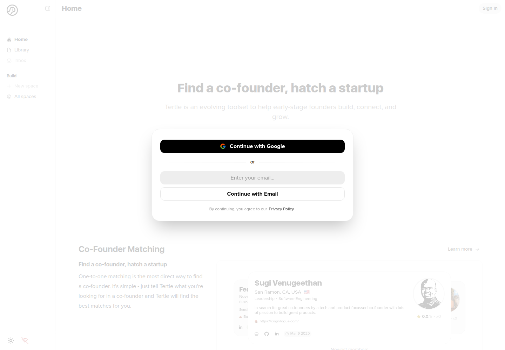
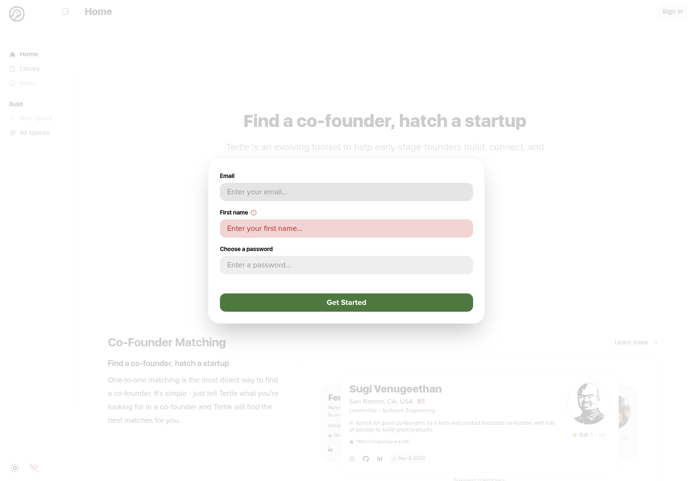

Profile
- Company
- Tertle
- Url
- https://tertle.io/
- Source Category
- Cofounder-matching platforms
- Research Status
- Deep Cited Research / Draft Complete
- Current Status
- live - confirmed via direct fetch (HTTP 200, active profile listings, functioning nav/sign-in). Small, early-stage/beta product, not dead.
- Founded Launch Year
- Founder Ryan Connaughton was discussing the build publicly by ~Feb 2023 (LinkedIn activity date) and the project was covered by FounderClub in April 2024 ('Creating a Digital Platform that Matches Entrepreneurs with Co-Founders,' founderclub.com/tertle); site footer reads 'Tertle © 2025'. Best estimate: built/soft-launched 2023, branded/live by 2025.
- Company Age
- ~2-3 years (since ~2023)
- Hq Country
- not found / no public source; founder LinkedIn presence suggests UK-linked activity (Tertle has a UK LinkedIn company page, uk.linkedin.com/company/tertle) but no confirmed HQ location
- Operating Area
- Global/online; sample profiles on homepage span US, Italy, and other countries
- Target Users
- Early-stage tech founders and builders seeking a co-founder, particularly technical/product-focused solo founders
- Product Category
- cofounder matching; founder-investor / capital; NDA/e-sign; AI
Product Flows
- Swipe Card Interface
- not found / no public source - product describes 'one-to-one matching' via preference-based weekly introductions, not a swipe-card browsing UI
- Mutual Match
- not found / no public source explicitly describing a two-sided accept/reject mechanic; described instead as the system sending curated weekly matches directly
- Ai Matching Scoring
- yes - one-to-one matching; AI agents marked soon
- Ai Deck Scoring
- not found / no public source
- Founder To Founder Flow
- yes
- Founder To Investor Flow
- not found / no public source - Tertle's documented scope is exclusively founder-to-founder co-founder matching; no investor-facing browse/match/pitch flow is described anywhere in available materials.
- Project Profiles
- yes
- Messaging Collaboration
- yes - Buildspaces chat/docs/tasks
- Mobile App
- not found / no public source of a native iOS/Android app; product is web-only at tertle.io / app.tertle.io
- Web App
- yes
Security & Documents
- Nda Gated Unlock
- no - not found; profiles and the Buildspace collaboration tool are not described as gated behind any NDA or legal-agreement step. Batch-1 listed this as 'not found' already; this pass confirms no evidence of an NDA gate existing.
- Data Room
- not found / no public source
- E Signature
- no / not yet live - the only document-related feature ('Founders Agreement' template) is explicitly labeled 'Soon' on the live site as of this check, meaning no e-signature capability currently exists. Batch-1's 'yes' is corrected to 'not live yet.'
- Meeting Prep Ai Briefing
- not found / no public source - Inbox supports 'schedule calls' but no AI-generated briefing/prep feature is described
Pricing, Funding & Traction
- Pricing Model
- Batch-1 flagged 'enterprise' pricing model, but no evidence of any paid tier, enterprise offering, or pricing page was found in this pass; site reads as free/early-stage with no monetization surface visible. Treated as unverified/likely incorrect - actual pricing model is 'not found / appears free during current beta.'
- Business Model
- Unclear/likely pre-monetization community-building product; no ads, no visible subscription, no enterprise sales motion found
- Total Funding
- not found / no public source - no Crunchbase profile with financial data was accessible (Crunchbase page exists but returned no funding details in available search snippets)
- Funding Rounds
- not found / no public source
- Investors
- not found / no public source
- Funding Source Type
- Appears solo-founder/bootstrapped ('Built with love by Ryan' on homepage; single named team member 'Ryan / TertleAI' in footer)
- Last Funding Date
- not found / no public source
- Users Traction
- not found / no public quantified user count; homepage shows a small number of sample/newest-member profiles (single-digit ratings, '0.0/5 x 0' review counts visible on sample profiles), consistent with an early-stage/low-traction product rather than a scaled network
- Deals Funding Facilitated
- not found / no public source
- Partnerships
- not found / no public source
- Media Coverage
- FounderClub feature: 'Creating a Digital Platform that Matches Entrepreneurs with Co-Founders' (founderclub.com/tertle, April 2024); listed in third-party aggregator roundups (SourceForge, Slashdot product listings; startupsavant.com '10 Best Websites to Find a Co-Founder'); a Product Hunt discussion thread where the founder engaged with feedback (producthunt.com/discussions/85087)
- Product Update Activity
- Site shows active feature roadmap language ('Beta', 'Soon' tags on Buildspaces, AI Agent co-founders, and Founders Agreement), indicating ongoing development as of the 2026 check, though update cadence/changelog is not public
- Acquisition Rebrand History
- not found / no public source; footer branding references 'TertleAI' suggesting a possible AI-focused rebrand emphasis, but no formal rebrand event documented
Scores
- Product Overlap Score
- 4
- Feature Maturity Score
- 2
- Market Traction Score
- 1
- Funding Strength Score
- 1
- Ai Depth Score
- 2
- Nda Security Strength Score
- 1
- Network Moat Score
- 1
- Direct Threat Score
- 1.7
- Source Confidence
- Medium
Evidence Notes
- Primary Sources
- https://tertle.io/
- Secondary Sources
- https://www.founderclub.com/tertle/
https://www.producthunt.com/discussions/85087-finding-the-right-co-founder-is-really-hard
https://uk.linkedin.com/company/tertle
https://sourceforge.net/software/product/Tertle/
https://startupsavant.com/startup-resources/best-websites-to-find-co-founders - Unsupported Claims
- Batch-1's 'pricing_model: enterprise' and 'e_signature: yes' are unsupported by any evidence found and have been corrected. Founding year, HQ, and funding are all genuinely unfindable given the apparent solo-founder/bootstrapped nature of the project.
- Contradictions
- Batch-1 listed e_signature as 'yes' and pricing_model as 'enterprise' - both contradicted by the live site, which shows the relevant document feature ('Founders Agreement') explicitly marked 'Soon' (not live) and shows no enterprise sales/pricing surface at all.
- Last Checked
- 2026-07-19
- Notes
- Smallest, most clearly solo-founder/bootstrapped product in this batch. Distinguishing feature is the 'Buildspace' shared collaboration workspace for trial projects post-match (a genuinely differentiated idea vs. the other four), plus a roadmapped-but-not-live 'AI Agent co-founder' and 'Founders Agreement' e-sign template - both explicitly future features, not current ones. Low current traction and no funding found.
Registration Flow
Research date: 2026-07-19. Screenshots are sanitized public copies from the private registration-flow capture set; credentials, tokens, verification links/codes, browser chrome, and private identifiers are not intentionally published.
Outcome: stopped at required truthful-details / submission boundary.
Stop point: Blank email account-creation form before entering a first name or password and before selecting Get Started
Blocker / boundary: The direct email registration form requires a truthful first name in addition to the authorized email address and site-specific password, but the registration credential file supplies no first name. The Google route would require a separately authorized interactive Google sign-in and OAuth consent path.
- Official public homepage. Tertle's official homepage describes an evolving toolset for early-stage founders and presents Sign in and Get Started entry points alongside its co-founder matching product.
- Registration method choice. Get Started opens an in-page registration dialog offering Continue with Google or an email address followed by Continue with Email. The dialog states that continuing indicates agreement to Tertle's Privacy Policy.
- Email account-creation form. After an email address is accepted, Tertle presents an account-creation form requiring Email, First name, and Choose a password, with a Get Started submission button. The retained evidence is blank and demonstrates that First name is required.


